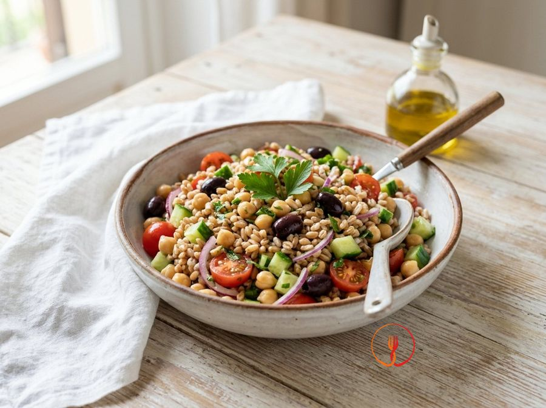

Insalata mediterranea di farro e ceci
Un piatto unico bilanciato che unisce la fibra del farro alle proteine vegetali dei ceci, arricchito da verdure fresche croccanti. Ideale per un pasto veloce ed economico, perfetto da preparare in anticipo per tutta la famiglia.
Ingredienti
- Farro perlato280 g
- Ceci precotti (peso sgocciolato)480 g
- Pomodori ciliegino250 g
- Cetriolo1 pz
- Cipolla rossa di Tropea60 g
- Olive nere denocciolate40 g
- Olio extravergine d'oliva40 ml
- Limone (succo e scorza)1 pz
- Prezzemolo fresco20 g
- Sale fino5 g
Allergeni
Glutine
Procedimento
- Sciacquare il farro sotto acqua corrente fredda utilizzando un colino a maglie strette per eliminare le impurità e l'amido in eccesso finché l'acqua non risulta limpida.
- Portare a bollore una pentola con circa 2 litri d'acqua leggermente salata e cuocere il farro per circa 20 minuti, testando la consistenza che deve risultare tenera ma ancora piacevolmente al dente.
- Scolare i ceci dal liquido di governo della lattina e sciacquarli abbondantemente sotto l'acqua per rimuovere il sale di conservazione, lasciandoli poi scolare bene.
- Lavare i pomodori ciliegino e tagliarli in quattro parti; pelare il cetriolo, privarlo dei semi centrali se necessario e ridurlo a cubetti piccoli e uniformi.
- Affettare la cipolla rossa molto finemente e lasciarla in ammollo in acqua fredda per 10 minuti per renderla più croccante e mitigare il sapore pungente, migliorando la digeribilità.
- Una volta cotto, scolare il farro e passarlo rapidamente sotto un getto d'acqua fredda per bloccare la cottura e mantenere i chicchi ben sgranati e compatti.
- In una tazzina, preparare un'emulsione mescolando l'olio extravergine d'oliva con il succo di limone, la scorza grattugiata e un pizzico di pepe nero, sbattendo con una forchetta.
- In una ciotola capiente, unire il farro ben asciugato, i ceci, i pomodori, il cetriolo, la cipolla scolata e le olive tagliate a rondelle, mescolando delicatamente dal basso verso l'alto.
- Aggiungere il prezzemolo fresco tritato al momento e versare l'emulsione di olio e limone su tutta l'insalata, assicurandosi che ogni chicco sia condito uniformemente.
- Lasciare riposare il piatto in frigorifero o a temperatura ambiente per almeno 15 minuti prima di servire, permettendo ai sapori mediterranei di amalgamarsi perfettamente tra loro.
Valori nutrizionali (stima)
| Per porzione (294 g) | Per 100 g | |
|---|---|---|
| Energia | 2071 kJ / 495.0 kcal | 704.4 kJ / 168.4 kcal |
| Proteine | 18.0 g | 6.1 g |
| Carboidrati | 68.0 g | 23.1 g |
| di cui zuccheri | – g | – g |
| Grassi | 14.0 g | 4.8 g |
| di cui saturi | – g | – g |
| Fibre | – g | – g |
| Sale | – g | – g |
Valori stimati con l'AI su dati medi CREA / USDA: sono indicativi e non sostituiscono il parere di un medico o di un nutrizionista.
Apri la ricetta nell'app per la lista della spesa, le schede ingredienti e i negozi vicini.